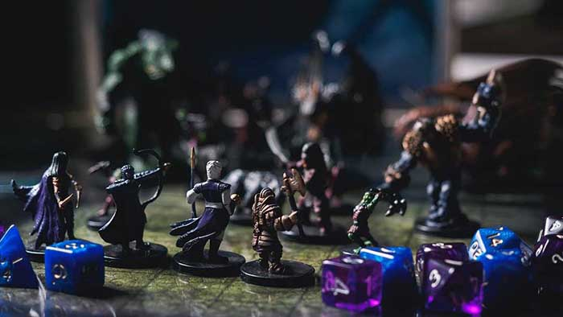

Dungeons & Dragons
O hře
Dungeons & Dragons je roleplaying hra (nebo-li hra na hrdiny) ve světech plných mečů a čarodějnictví. Sdílí prvky s dětskými hrami líčení. Stejně jako tyto hry, i D&D je poháněn představivostí. Jde o zobrazování tyčícího se hradu pod bouřlivou noční oblohou a představu, jak by fantasy dobrodruh mohl reagovat na výzvy, které scéna představuje.
Na rozdíl od přetvářkových her, D&D dává příběhům strukturu, způsob, jak určit důsledky akce dobrodruhů. Hráči hodí kostkami, aby vyřešili, zda jejich útoky zasáhnou nebo minou, nebo zda jejich dobrodruzi dokážou upravit útes, odvalit se od úderu magického blesku nebo stáhnout další nebezpečný úkol. Všechno je možné, ale kostky dělají některé výsledky pravděpodobnější než jiné.
Ve hře Dungeons & Dragons si každý hráč vytvoří dobrodruha (nazývaného také postava) a spojí se s dalšími dobrodruhy (hranými přáteli). Ve spolupráci by skupina mohla prozkoumat temný žalář, zničené město, strašidelný hrad, ztracený chrám hluboko v džungli nebo jeskynní jeskyni pod tajemnou horou. Dobrodruzi mohou řešit hádanky, mluvit s jinými postavami, bojovat s fantastickými příšerami a objevovat pohádkové magické předměty a další poklady.
Začátky
První hra Dungeons & Dragons se odehrála, když se Gary Gygax a Dave Arneson rozhodli personalizovat masivní bitvy svých fantasy válečných her s využitím jednotlivých hrdinů. Tato inspirace se stala první fantasy roleplaying hrou, ve které jsou hráči postavami v pokračujícím fantasy příběhu. Tento nový druh hry se stal v průběhu let nesmírně populární a D&D se rozrostla o mnoho nových způsobů, jak živě zažít světy hrdinské fantazie.
{kind=link}